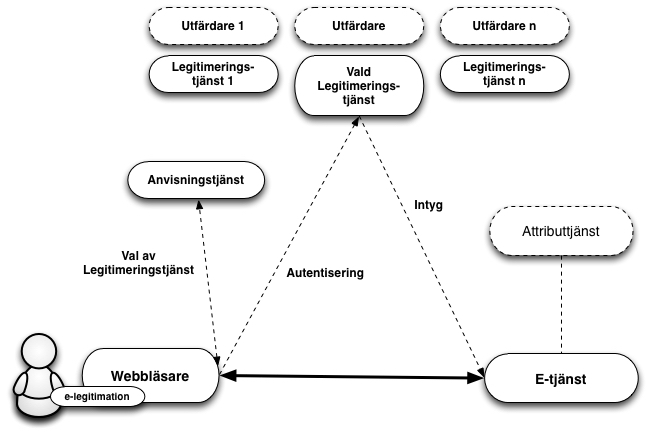
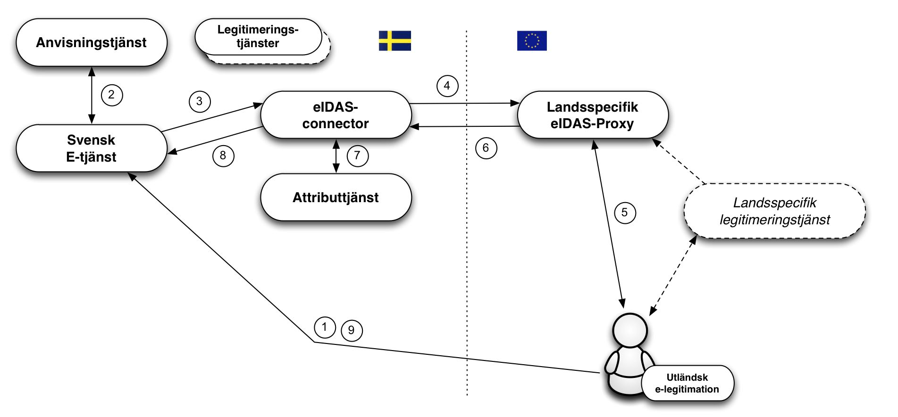

ELN-0600-v1.5
1.1. Översikt
1.2. Tillitsramverk och säkerhetsnivåer
1.3. Tjänst för insamling, administration och publicering av metadata
1.4. Anvisningstjänst
1.5. Integration hos förlitande part
1.6. Underskrift
1.7. E-legitimationsnämndens tekniska ramverk och eIDAS
1.7.1. Autentiseringar med utländska e-legitimationer
1.7.2. Underskrifter med utländska e-legitimationer
1.7.3. Hantering av identiteter
2.1. SAML-profiler
2.1.1. Specifikationer för anvisning (Discovery)
2.2. Specifikationer för identitetsfederationer som följer E-legitimationsnämndens tekniska ramverk
2.2.1. Register för identifierare definierade av E-legitimationsnämnden
2.2.2. Attributspecifikation
3.2. Övriga referenser
E-legitimationsnämndens tekniska ramverk är anpassat för identitetsfederationer som baseras på SAML 2.0.
Förlitande parter erhåller identitetsintyg i ett standardiserat format från en identitetsintygstjänst, i detta ramverk benämnd legitimeringstjänst. Legitimeringstjänsterna tillhandahålls av, i federationen, godkända leverantörer av intygstjänster.
Detta innebär också att e-tjänster som kräver underskrift inte längre behöver anpassas efter olika användares e-legitimationer för att skapa elektroniska underskrifter. Istället överlåter e-tjänsten detta till en underskriftstjänst där användare med stöd av legitimering via intygstjänsten ges möjlighet att underteckna elektroniska handlingar.
Inom federationen intar e-tjänster och motsvarande förlitande parter rollen som Service Provider (SP) medan legitimeringstjänster som utfärdar identitetsintyg intar rollen som Identity Provider (IdP) och därmed den som autentiserar användaren, oavsett mot vilken e-tjänst som användaren legitimerar sig.
För de fall där e-tjänsten behöver mer information om användaren t ex. uppgift om juridisk behörighet, kan en fråga ställas till en attributtjänst, Attribute Authority (AA), inom federationen, om sådan relevant attributtjänst finns. Genom en attributsförfrågan kan e-tjänsten erhålla nödvändig kompletterande information för att kunna auktorisera användaren och ge tillgång till e-tjänsten eller motsvarande.
Då såväl personidentitetsuppgifter som andra attribut kopplat till användare tillhandahålls genom identitetsintyg och attributsintyg, kan alla typer av e-legitimationer som förlitande part har avtal om och som ingår i federationen användas för legitimering mot en e-tjänst som kräver såväl personnummer/samordningsnummer som ytterligare information om juridisk behörighet, även om e-legitimationen inte innehåller några specifika personuppgifter (t.ex. koddosor för generering av engångslösenord).

Figur 1: Illustration av kommunikationen mellan de olika tjänsterna inom en identitetsfederation.
Grunden för vilken säkerhetsnivå som tillämpas när en användare legitimerar sig är den tillitsnivå avseende e-legitimationen som e-tjänsten kräver. För att dessa säkerhetsnivåer ska kunna vara jämförbara inom ramen för federationen definieras fyra tillitsnivåer (1 – 4) i Tillitsramverket för Svensk e-legitimation [EidTillit] och tre tillitsnivåer (låg, väsentlig, hög) i EU-förordningen eIDAS. Alla som utfärdar identitetsintyg måste visa att hela den process som ligger till grund för utfärdandet av identitetsintyg uppfyller kraven i den efterfrågade tillitsnivån, detta innefattar bl.a.
Krav på skapandet av identitetsintyget.
Krav på den elektroniska legitimeringen (autentiseringen).
Krav på utfärdandeprocessen.
Krav på själva e-legitimationen och dess användning.
Krav på utfärdaren av e-legitimationen.
Krav på fastställande av den e-legitimationssökandens identitet.
En SAML-federation tillhandahåller information om federationens deltagare genom s.k. metadata. Som deltagare i en federation räknas såväl aktörer som levererar legitimerings- och attributtjänster i federationen som förlitande parter, d.v.s. aktörer som konsumerar dessa tjänster, t ex. e-tjänster.
Genom federationens metadata kan deltagare inhämta information om andra deltagares tjänster, inklusive de uppgifter som krävs för ett säkert informationsutbyte mellan deltagarna. Metadata måste hållas uppdaterat av respektive part och överensstämma med avtalade förhållanden.
Det viktigaste syftet med metadata är att tillhandahålla de nycklar som krävs för säker kommunikation och informationsutväxling mellan tjänster. Utöver nycklar innehåller metadata även annan information som är viktig för samverkan mellan tjänster t ex. adresser till funktioner som krävs, information om tillitsnivåer, tjänstekategorier, användargränssnittsinformation mm.
Identitetsfederationer förutsätter att legitimeringstjänster och e-tjänster litar på varandra och därmed kan verifiera de signaturer som används i kommunikationen mellan parterna. Rent tekniskt baseras denna tillit på att respektive aktörer litar på varandras signeringscertifikat.
En identitetsfederation definieras av ett register i XML-format som är signerat med federationsoperatörens certifikat. Filen innehåller information om identitetsfederationens medlemmar inklusive deras certifikat. Eftersom filen med metadata är signerad räcker det med att jämföra ett certifikat med dess motsvarighet i metadata. En infrastruktur baserad på ett centralt federationsregister förutsätter att registret uppdateras kontinuerligt samt att federationsmedlemmarna alltid använder den senaste versionen av filen.
I en identitetsfederation är det möjligt att erbjuda och konsumera en gemensam anvisningstjänst (Discovery Service), som listar vilka legitimeringstjänster som är möjliga för användaren att välja mellan. Syftet med en sådan anvisningstjänst är att avlasta de enskilda e-tjänsterna som ingår i identitetsfederationen från att själva implementera stöd för hur användare väljer legitimeringstjänst (eller inloggningsmetod).
Genom att anvisningstjänsten finns tillgänglig inom identitetsfederationen kan e-tjänster styra sina användare dit för val av legitimeringstjänst. Anvisningstjänsten interagerar med användaren som gör sitt val och användaren, tillsammans med dennes val, styrs tillbaka till e-tjänsten som nu vet till vilken legitimeringstjänst användaren ska skickas för legitimering.
Förlitandeparter, t.ex. e-tjänster, integrerar mot legitimeringstjänster genom standardiserade meddelanden och konsumerar identitetsintyg vilka också har standardiserade format.
Detta tekniska ramverk bygger på interoperabilitetsprofilen ” SAML2int Profile – SAML 2.0 Interoperability Profile” [SAML2Int]. Profilen stöds av ett flertal kommersiella produkter och Open Source-lösningar, vilket underlättar integrationsarbetet hos e-tjänster.
Många e-tjänster använder fristående autentiseringslösningar vilket innebär att en anpassning av integrationen för att följa E-legitimationsnämndens tekniska ramverk får en begränsad påverkan på e-tjänsten som sådan.
Vid underskrift blir det med E-legitimationsnämndens tekniska ramverk möjligt att använda olika typer av e-legitimationer, även sådana som inte är certifikatbaserade, utan att speciella anpassningar i e-tjänsten behövs. Orsaken är att det är det elektroniskt utställda identitetsintyget (som används för identifiering av användare vid underskrift) har samma format oavsett vilken typ av e-legitimation som användaren använder.
En underskriftstjänst har som syfte att möjliggöra underskrift inom identitetsfederationer som följer E-legitimationsnämndens tekniska ramverk med stöd av alla typer av e-legitimationer som erbjuder tillräcklig grad av säkerhet.
Genom att upphandla och införa en underskriftstjänst kan en förlitande part som ingår i en sådan federation låta en användare skriva under en elektronisk handling med stöd av den upphandlande underskriftstjänsten. Användarens elektroniska signatur och tillhörande signeringscertifikat skapas av underskriftstjänsten efter det att användaren accepterat att skriva under genom att legitimera sig mot underskriftstjänsten.
EU-förordningen (910/2014) om elektronisk identifiering och betrodda tjänster, eIDAS, ställer krav på svenska offentliga organ att erkänna de e-legitimationer som andra eIDAS-länder har anmält. Detta innebär att en offentlig svensk e-tjänst baserat på vissa regler skall kunna acceptera en inloggning som utförs med en e-legitimation utställd i ett annat land.
De tekniska specifikationerna för eIDAS bygger, såsom E-legitimationsnämndens tekniska ramverk, på SAML-standarder, och även om likheterna är många finns även skillnader i dessa specifikationer. En svensk e-tjänst ska dock inte förhålla sig direkt till eIDAS tekniska specifikationer. Nedanstående bild illustrerar hur E-legitimationsnämndens eIDAS-nod (eIDAS-connector) agerar som en brygga mellan andra länder och en svensk federation då en person autentiseras med en utländsk e-legitimation mot en svensk e-tjänst. E-legitimationsnämndens eIDAS-nod följer E-legitimationsnämndens tekniska ramverk.

Flödet är enligt följande:
En användare med en utländsk e-legitimation begär åtkomst till en svensk e-tjänst (d.v.s., loggar in).
E-tjänsten låter användaren välja inloggningssätt med hjälp av en anvisningstjänst. Ett val ”Foreign eID” visas upp, vilket användaren i eIDAS-fallet väljer.
E-tjänsten skapar en legitimeringsbegäran enligt detta tekniska ramverk och styr användaren till den svenska eIDAS-noden (connector) som E-legitimationsnämnden ansvarar för. eIDAS-noden uppträder som en legitimeringstjänst (Identity Provider) i federationen/-erna in mot svenska förlitande parter vilket innebär att kommunikation med denna tjänst utförs på samma sätt som mot övriga legitimeringstjänster inom federationer som följer E-legitimationsnämndens tekniska ramverk.
Den mottagna begäran behandlas och eIDAS-noden visar upp en valsida där användaren väljer ”sitt land”1. Den svenska eIDAS-noden omvandlar nu den mottagna legitimeringsbegäran till en legitimeringsbegäran enligt eIDAS och användaren styrs till det valda landets ”eIDAS Proxy-tjänst”.
Då legitimeringsbegäran mottas av den eIDAS-Proxy-tjänst för valt land tar detta lands teknik för autentisering över. Inte alla länder inom eIDAS använder SAML för autentisering, men om så var fallet i vårt exempel skulle användaren styras vidare till en legitimeringstjänst (Identity Provider), och innan dess kanske även en anvisningstjänst för val av legitimeringstjänst.
Då en autentisering utförts skapas ett intyg (Assertion) enligt eIDAS specifikationer. Detta intyg innehåller bl.a. eIDAS-specifika attribut som identifierar användaren.
Detta intyg styrs nu vidare till den svenska eIDAS-noden. Noden tar emot intyget och validerar dess korrekthet. I samband med att intyget transformeras från eIDAS-format till ett intyg utformat enligt E-legitimationsnämndens tekniska ramverk anropar noden också en attributtjänst för att, om möjligt, givet eIDAS-attribut erhålla attribut som stöds av den svenska e-tjänsten (t.ex. slå upp ett svenskt person- eller samordningsnummer givet ett eIDAS PersonIdentifier-attribut).
Slutligen postas ett intyg, på ett format som uppfyller E-legitimationsnämndens tekniska ramverk, till e-tjänsten.
Förlitande part kompletterar eventuellt med ytterligare information och avgör om användaren ska ges till åtkomst till tjänsten.
Svenska e-tjänster behöver således endast stödja E-legitimationsnämndens tekniska ramverk för att kunna hantera en autentisering utförd med en europeisk e-legitimation. Dock måste e-tjänsten kunna hantera den identitet som presenteras, vilket inte nödvändigtvis är ett personnummer eller samordningsnummer. Det kan alltså hända att en e-tjänst autentiserar en användare via eIDAS-ramverket, men att användarens presenterade identitet inte går att använda hos e-tjänsten. Mer om detta i kapitlet 1.7.3 nedan.
[1]: Egentligen väljer användaren till vilken ”eIDAS Proxy-tjänst” som begäran ska skickas vidare till. Detta är beroende landstillhörigheten för användarens e-legitimationsutfärdare.
Inom ramen för detta tekniska ramverk tillämpas en modell för elektronisk underskrift som kallas federerad underskrift. En serverbaserad underskriftstjänst knyts till e-tjänsten som i sin tur begär underskrift. När en användare skriver under ett dokument skickar e-tjänsten en underskriftsbegäran till underskriftstjänsten. Underskriftstjänsten begär därefter att användaren legitimerar sig. I samband med legitimeringen godkänner användaren underskriften. Underskriftstjänsten skickar tillbaka uppgifter till e-tjänsten och därefter lagras underskriftsuppgifterna kopplade till den handling som har skrivits under.
Detta förfarande möjliggör att skriva under även med utländsk e-legitimation då underskriftstjänsten kan välja att legitimera användaren med utländsk e-legitimation i enlighet med förfarandet som beskrivs ovan i avsnitt 1.7.1.
Vid en underskrift ansvarar i det fallet den svenska eIDAS-noden för att användaren upplyses om att syftet med legitimeringen är att skriva under ett dokument, vem som begärt underskrift samt med eventuell information om vad som undertecknas. Först när användaren genom att legitimera sig (för underskrift) utfärdas ett identitetsintyg, som skickas till underskriftstjänsten och som i sin tur genererar underskriften.
I likhet med underskrift med stöd av legitimering med svenska e-legitimationer så innebär underskrift med utländsk e-legitimation att användarens av förlitande part registrerade identitet kan utgöras av andra attribut än de som tillhandahålls av legitimeringstjänsten (t.ex. anställningsnummer i stället för personnummer).
Identitetsintyg från andra länder följer EU-gemensamma tekniska specifikationer framtagna inom ramen för eIDAS-regelverket. Här specificeras de attribut som varje land alltid måste skicka med för fysiska personer såväl som för organisationer (”Minimum Dataset”, MDS). Varje land måste skicka med en unik identifierare per e-legitimation som representerar endast en fysisk person. Från vissa länder kommer dessa identifierare vara unika och beständiga per person på motsvarande sätt som t.ex. svenska personnummer, men dessa identifierare kan ha vitt skilda sammansättningar och ha väldigt olika egenskaper. En egenskap som kan variera är hur persistent en sådan identifierare är, d.v.s., om en sådan identifierare är oförändrad under en persons livstid eller om den ändras om personen exempelvis flyttar till en annan region, byter namn eller bara byter e-legitimation. Från några länder (t.ex. Storbritannien) kommer identifieraren att vara olika beroende på vilken av landets e-legitimationer en användare för tillfället väljer att använda.
För att förenkla hanteringen av användare i svenska e-tjänster så genererar den svenska eIDAS-noden ett standardiserat ID-attribut för användare som legitimerats med utländsk e-legitimation, ett s.k. provisional ID (förkortat PRID). Dessutom skapas ett tillhörande attribut som deklarerar vilken förväntad persistens, eller livslängd, detta ID-attribut har. PRID-attributet genereras utifrån de attributvärden som erhålls från den utländska legitimeringen enligt specificerade metoder för respektive land. Varje kombination av land och metod klassas med avseende på förväntad persistens, d.v.s., hur sannolikt det är att en identitet ändras över tiden för samma person. Detta gör det möjligt för svenska e-tjänster att anpassa kommunikationen med användaren och proaktivt tillhandahålla funktioner som underlättar för en användare vars identitet har ändrats, att återfå kontrollen över sin information i e-tjänsten.
I vissa fall kan en person som legitimeras med en utländsk e-legitimation även inneha ett svenskt personnummer eller ett styrkt svenskt samordningsnummer. Det kan till exempel röra sig om en svensk medborgare som flyttat utomlands och skaffat utländsk e-legitimation eller en utländsk medborgare som har sådan anknytning till svenska myndigheter att denne tilldelats ett styrkt samordningsnummer.
Det faktum att en person med utländsk e-legitimation innehar ett svenskt personnummer eller samordningsnummer är normalt sett inte känt för den utländska legitimeringstjänsten och denna information ingår därför inte i identitetsintyg från landet där personen legitimeras. Den svenska noden har däremot möjlighet att fråga en attributtjänst i Sverige2 om det finns ett registrerat personnummer eller samordningsnummer för den legitimerade personen och kan, om så är fallet, påföra sådan information i det identitetsintyg som skickas till e-tjänsten.
[2]: Om en sådan kommer att finnas i enlighet med Skatteverkets förslag till regeringen i oktober 2016.
Sverige har möjlighet att anmäla svenska e-legitimationer på tillitsnivå låg (low), väsentlig (substantial) och hög (high) enligt eIDAS. Det finns en politisk vilja i Sverige att låta innehavare av svenska e-legitimationer logga in i utländska tjänster.
En begäran om legitimering från en utländsk e-tjänst ställs till E-legitimationsnämndens eIDAS-nod (Proxy-tjänst) via en s.k. eIDAS-connector i e-tjänstens land. I den svenska eIDAS-noden väljer användaren med vilken svensk e-legitimation denne önskar autentisera sig, varpå en legitimeringsbegäran till den legitimeringstjänst (Identity Provider) som hanterar vald e-legitimation skickas. Denna begäran är utformad enligt E-legitimationsnämndens tekniska ramverk vilket innebär att en svensk legitimeringstjänst inte behöver förhålla sig till eIDAS tekniska specifikationer.
Användaren autentiseras hos den svenska legitimeringstjänsten och ett identitetsintyg ställs ut (enligt E-legitimationsnämndens tekniska ramverk). Detta intyg mottas av den svenska eIDAS Proxy-tjänsten och omvandlas till ett intyg enligt eIDAS specifikationer innan det skickas vidare till den utländska eIDAS-connectorn och därpå till den anropande e-tjänsten (Service Provider).
När en svensk e-legitimation används för inloggning utomlands har Sverige möjlighet att skicka med antingen det svenska personnumret som personidentitetsbegrepp, eller en pseudonym. Denna fråga och andra villkor för att använda svenska e-legitimationer i utländska e-tjänster utreds under 2017 i en offentlig utredning (N 2016:01 Utredningen om effektiv styrning av nationella digitala tjänster), som ska redovisas till regeringen 2017-12-31.
Detta kapitel innehåller specifikationer och profiler för identitetsfederationer som följer E-legitimationsnämndens tekniska ramverk, och vissa kringliggande tjänster. Där inget annat nämns är dessa dokument normativa för leverans av tjänster inom identitetsfederationer som implementerar E-legitimationsnämndens tekniska ramverk.
Identitetsfederationer som följer detta tekniska ramverk är uppbyggda kring följande SAML-profiler:
Implementationsprofil – ”Kantara Initiative eGovernment Implementation Profile of SAML 2.0” [eGov2].
Deploymentprofil – E-legitimationsnämndens ”Deployment Profile for the Swedish eID Framework” [EidProfile]. Denna profil utgår från ”SAML2int profile – SAML 2.0 Interoperability Profile” [SAML2Int].
Den specifikation, [EidDiscovery], som gällt i tidigare versioner av tekniskt ramverk är inte längre korrekt på grund av förändrade förutsättningar. Specifikt beror detta på att den tidigare definitionen att en e-legitimationsutfärdare endast kunde representeras med en legitimeringstjänst inte längre gäller.
E-legitimationsnämnden planerar att utkomma med en uppdaterad specifikation rörande anvisning i kommande utkast av tekniskt ramverk.
Implementering av en infrastruktur för Svensk e-legitimation kräver olika former av identifierare för att representera objekt i datastrukturer. Dokumentet ”Registry for identifiers assigned by the Swedish e-identification board” [EidRegistry] definierar strukturen för identifierare som tilldelats av E-legitimationsnämnden, samt ett register över definierade identifierare.
Dokumentet ”Attribute Specification for the Swedish eID Framework” [EidAttributes] deklarerar de SAML attributprofiler som används inom identitetsfederationer som följer tekniskt ramverk inklusive de som ansluter till eIDAS via den svenska eIDAS-noden.
Dokumentet ”eIDAS Constructed Attributes Specification for the Swedish eID Framework” [EidConstrAttributes] specificerar processer och regler för hur ID-attribut konstrueras baserat på attribut som tas emot vid legitimering mot eIDAS.
Entitetskategorier (Entity Categories) används inom federationen för tre syften:
Service Entity Categories – Används i federationens metadata för att representera e-tjänsters krav på tillitsnivåer och begärda attribut, samt legitimeringstjänsters uppfyllande av tillitsnivåer och leverans av attribut.
Service Property Categories – Används för att representera en viss egenskap hos en tjänst.
Service Type Entity Categories – Används för att representera olika tjänstetyper inom federationen.
Dokumentet ”Entity Categories for the Swedish eID Framework” [EidEntCat] specificerar de entitetskategorier som definieras av E-legitimationsnämnden och beskriver dess betydelse.
Detta stycke innehåller referenser till de dokument vilka definierar underskriftstjänster inom federationer som följer detta tekniska ramverk.
Implementationsprofilen ”Implementation Profile for Using OASIS DSS in Central Signing Services” [EidDSSProfile] specificerar en profil för underskriftsbegäran och respons enligt OASIS standarden ”Digital Signature Service Core Protocols, Elements, and Bindings” [DSS], och utökar denna med definitioner specificerade i ”DSS Extension for Federated Central Signing Services” [EidDSSExt].
Vidare definieras en certifikatprofil ”Certificate profile for certificates issued by Central Signing services” [EidCertProf] som specificerar innehåll i signeringscertifikat. Denna profil tillämpar en ny certifikatextension till stöd för signeringstjänsten, Authentication Context Certificate Extension [AuthContext], vilken beskriver hur ”Authentication Context” representeras i X.509 certifikat.
[EidTillit]
Tillitsramverk för Svensk E-legitimation.
[EidProfile]
Deployment Profile for the Swedish eID Framework.
[EidRegistry]
Registry for identifiers assigned by the Swedish e-identification board.
[EidAttributes]
Attribute Specification for the Swedish eID Framework.
[EidConstrAttributes]
eIDAS Constructed Attributes Specification for the Swedish eID Framework.
[EidEntCat]
Entity Categories for the Swedish eID Framework.
[EidDiscovery]
Discovery within the Swedish eID Framework. (Ej längre giltigt).
[EidDSSProfile]
Implementation Profile for Using OASIS DSS in Central Signing Services.
[EidDSSExt]
DSS Extension for Federated Central Signing Services.
[EidCertProf]
Certificate profile for certificates issued by Central Signing services.
[eGov2]
Kantara Initiative eGovernment Implementation Profile of SAML 2.0, Version 2.0, June 11, 2010.
[SAML2Int]
SAML2int profile v0.2.1 – SAML 2.0 Interoperability Profile.
[IdpDisco]
OASIS Committee Specification, Identity Provider Discovery Service Protocol and Profile, March 2008.
[DSS]
[AuthContext]
Ändringar mellan version 1.4 och version 1.5:
Tillägg av avsnitt 1.7, om eIDAS.
Benämningen ”Tekniskt ramverk för Svensk e-legitimation” ersattes med ”E-legitimationsnämndens tekniska ramverk” med avsikten att reservera begreppet Svensk e-legitimation för kvalitetsmärkningen av svenska e-legitimationer vilken är oberoende av detta tekniska ramverk.
Referenser till tekniska specifikationer rörande anvisning i avsnitt 2.1.1 togs bort på grund av ändrade förutsättningar.
Ändringar mellan version 1.3 och version 1.4:
Tekniskt ramverk för Svensk e-legitimation bygger nu på en nyare version av ”SAML2int Deployment Profile” (se http://saml2int.org/profile/current/).
Specifikationen ”Authentication Context Classes for Levels of Assurance for the Swedish eID Framework” är inte längre del av tekniskt ramverk för Svensk e-legitimation. Dess tidigare syfte har ersatts med användande av attribut (som definieras i [EidAttributes] och [EidProfile]). I detta dokument utgår det tidigare kapitlet 2.2.3, ”Identifierare och schema för representation av tillitsnivåer”.
Specifikationen [EidDSSExt] vars tidigare namn var ”Eid2 DSS Extension for SAML based Central Signing service” heter nu ”DSS Extension for Federated Central Signing Services”.
Ändringar mellan version 1.2 och version 1.3:
Ändringar mellan version 1.1 och version 1.2:
Ändringar mellan version 1.0 och version 1.1:
Förtydliganden kring användande av entitetskategorier.
Tillägg av specifikationer för Underskriftstjänst.